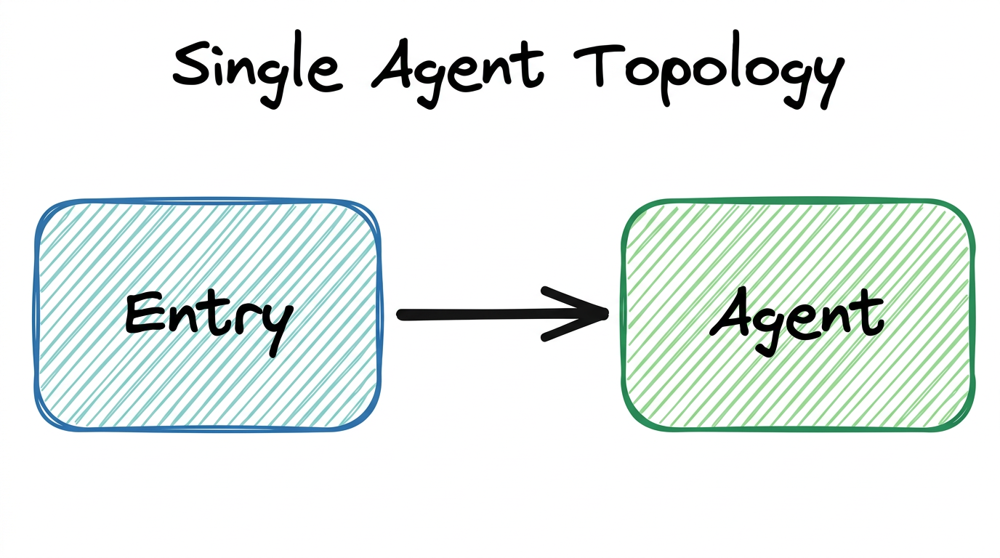
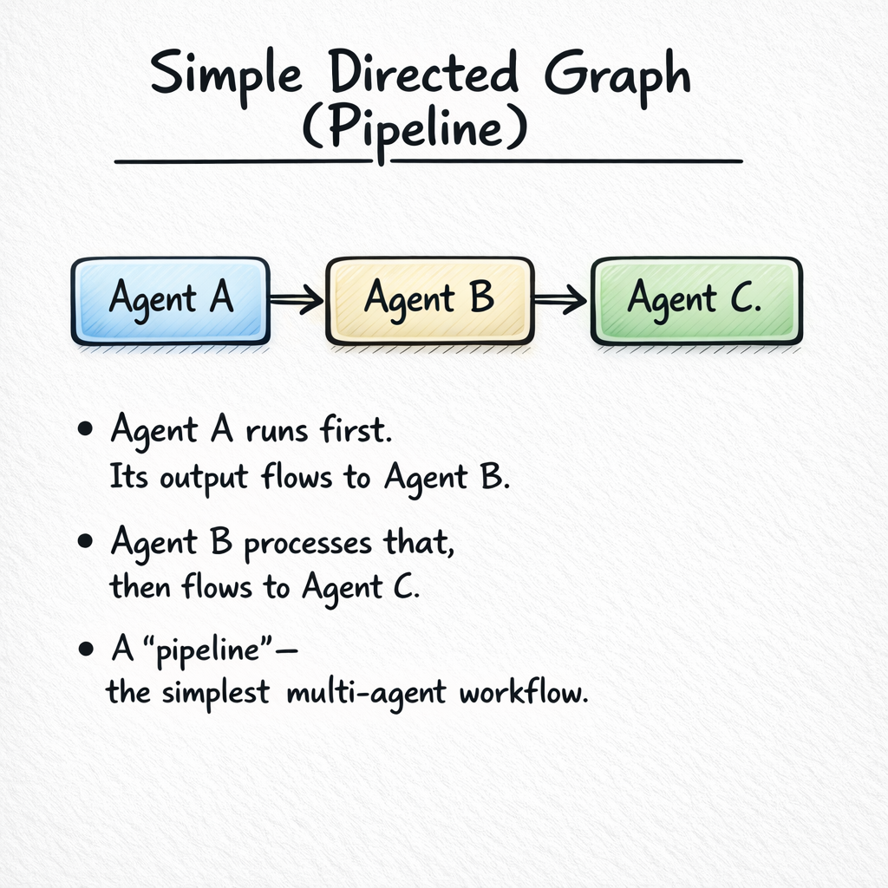
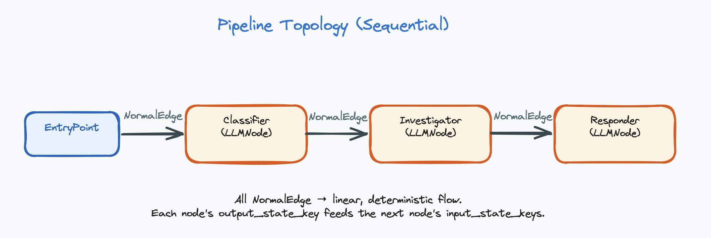
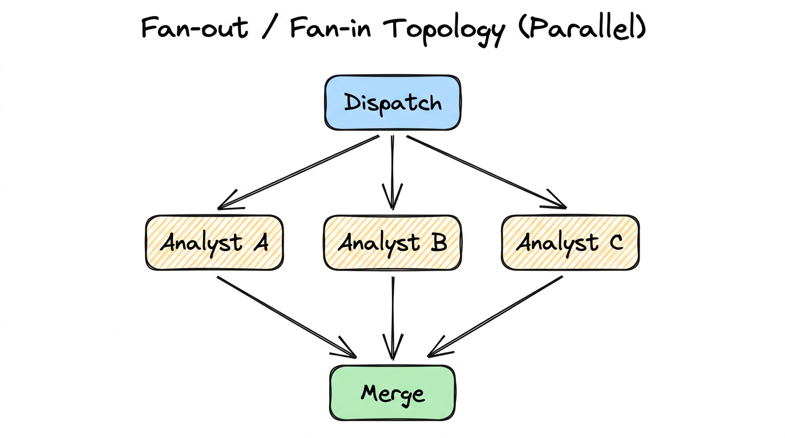
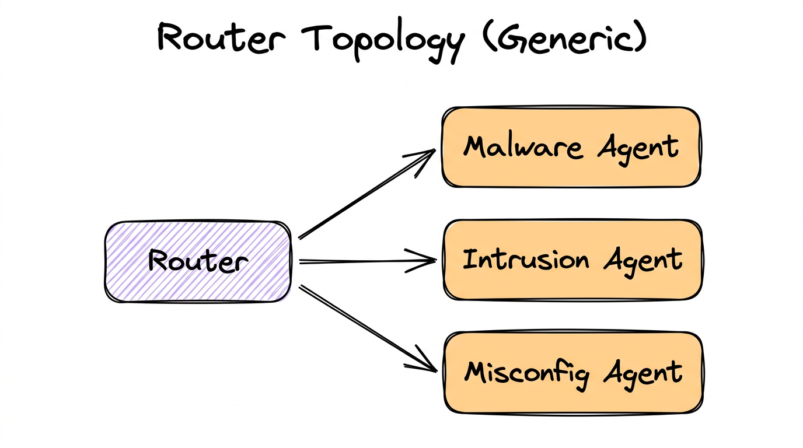
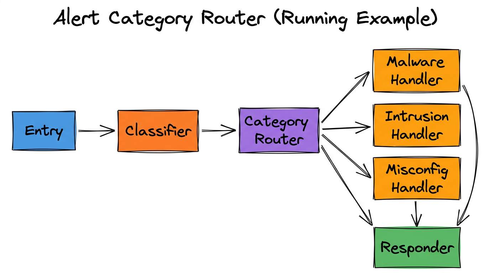
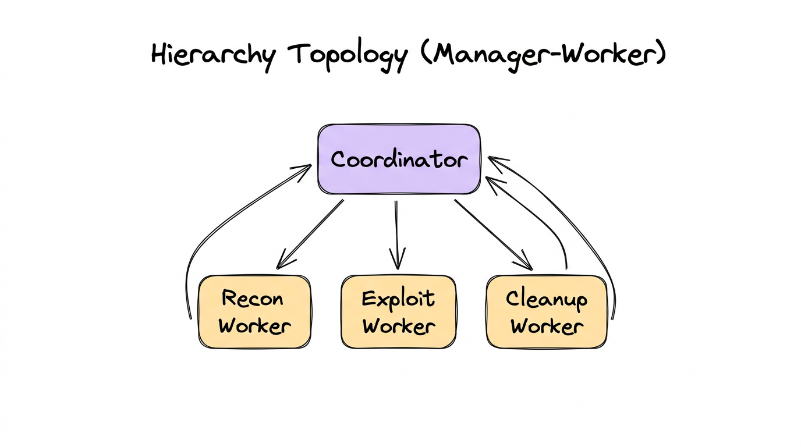
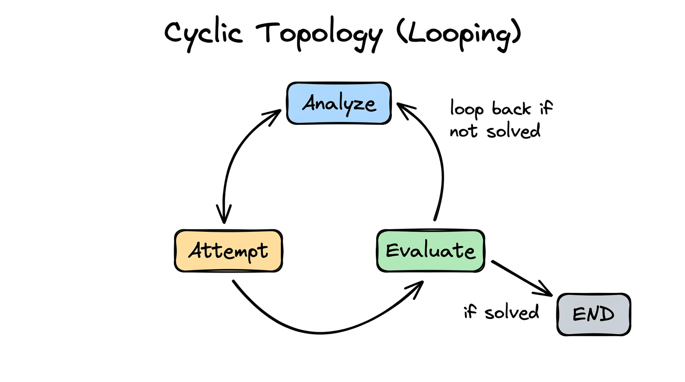
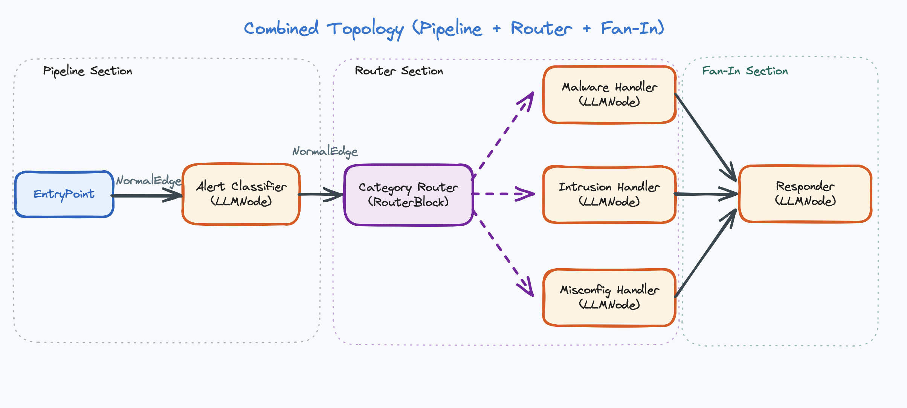

← Back to Agentic Workflow Guide
Chapter 3 Workflow Topology
How to connect agents into a graph
In Chapter 2, you learned how to configure a single agent. Now the question becomes: how many agents do you need, and how do they connect? This is the topology — the shape of your graph.
Topology is a design-time decision. You draw it before anything runs. It answers the question: “If I were to sketch this system on a whiteboard, what would the diagram look like?”
There are exactly six canonical topologies. Every multi-agent system you’ll ever encounter is one of these, or a combination of them.
3.1 — Single Agent
One node. No graph. The agent handles everything. This isn’t really a “topology” in the graph sense, but it’s the baseline you should always consider first.

When to Use
- The task is simple or tightly coupled (e.g., classify an alert, summarize a report)
- The agent needs fewer than 5 tools
- The expected conversation length is short (under ~20 tool calls)
- You’re prototyping and want to validate feasibility before adding complexity
When to Move Beyond
- The agent’s system prompt is becoming a wall of text trying to cover multiple roles
- You’re assigning more than 5–7 tools and seeing the LLM pick wrong ones
- The context window is filling up before the task is done
- You need different expertise for different phases of the task
Our Alert Classifier from Chapter 2 is a single agent. It receives an alert, classifies it, and returns a result. No decomposition needed. But what happens after classification? The alert needs to be investigated based on its category. That’s when we need more agents.
3.2 — Pipeline (Chain)
Nodes in a line: A → B → C. Each agent takes the previous agent’s output as input and produces output for the next one. This is the most common and most intuitive multi-agent pattern.

When to Use
- The task naturally decomposes into sequential phases
- Each phase requires different expertise, tools, or context
- The output of one phase is the input to the next
- You want clear separation of concerns and easy debugging
Design Tradeoffs
| Advantage | Disadvantage |
|---|---|
| Simple to understand and debug | Each agent adds latency (sequential execution) |
| Each agent has focused context | Errors propagate forward — if Agent A is wrong, B and C are wrong too |
| Easy to add or remove stages | No parallelism — can’t do multiple things at once |
| Natural for refine-and-improve patterns | Later agents may lose information from earlier stages |

Classifier: Model: GPT-4o-mini, Tools: none
"Classify the alert by category and severity."
Investigator: Model: GPT-4o, Tools: [check_ip, search_logs, check_hash]
"Investigate the classified alert. Gather evidence."
Responder: Model: GPT-4o-mini, Tools: [block_ip, create_ticket]
"Based on the investigation, take appropriate action."Each agent has a focused role, its own tools, and a clean handoff to the next. The Classifier is cheap and fast. The Investigator uses a powerful model because investigation requires complex reasoning. The Responder is cheap again — it just executes the plan.
In a pipeline, each connection is a direct edge — “after this node finishes, always go to the connected node.” No conditions, no branching.
3.3 — Fan-out / Fan-in (Parallel)
One input dispatched to multiple agents simultaneously. All agents run in parallel on the same input, then their results merge at a collection point.

When to Use
- You need multiple independent analyses of the same input
- The analyses are truly independent (no data dependency between branches)
- You want diverse perspectives, ensemble agreement, or redundancy
- Speed matters — parallel execution reduces total wall-clock time
Key Distinction from Router
Router = ONE branch runs. The router picks the single best handler.
This is the fundamental difference. Fan-out is about getting multiple answers. Router is about picking the right handler (the Router pattern is explained in more detail in Section 3.4).
A suspicious binary is analyzed by three agents simultaneously:
- Static Analyst: Examines code structure, function names, string patterns (tools:
decompile,check_strings) - Behavior Analyst: Looks at network activity, file system access, process spawning (tools:
run_sandbox,check_network) - Signature Analyst: Compares against known malware databases (tools:
check_hash,query_virustotal)
A Merge Agent combines all three reports into a unified assessment, potentially finding connections that individual analysts missed (e.g., the static analyst found an XOR loop, and the behavior analyst found a suspicious DNS query — together these suggest encrypted C2 communication).
To implement fan-out, connect one node’s output to multiple downstream nodes using direct edges. Then connect all downstream nodes to a single merge node. The merge node sees all outputs in the shared state.
3.4 — Router (Dispatcher)
One node classifies the input and sends it to exactly one of N downstream handlers. Only one branch activates per execution. This saves tokens and time by routing work to the right specialist.

When to Use
- Different input categories require fundamentally different handling
- Each handler needs different tools, prompts, or expertise
- You want to save cost by only running the relevant agent
- The classification can be done reliably (low ambiguity)
How Router Nodes Decide
A Router Node is an LLM-powered decision maker. It doesn’t use hard-coded rules (like “if alert contains ‘malware’ → malware agent”). Instead, it uses the LLM with structured output to make nuanced decisions:
# What the Router Node does internally:
1. Reads the conversation history from the shared state
2. Receives a system prompt describing routing criteria
3. Sees a list of available targets:
- llm_4_node: "Malware Agent" (LLMNode)
- llm_5_node: "Intrusion Agent" (LLMNode)
- llm_6_node: "Misconfig Agent" (LLMNode)
4. Uses structured output to return a decision:
{
"next_node": "llm_4_node",
"reason": "Alert mentions suspicious binary download
and PE file execution, indicating malware"
}
5. The system validates the choice against available targets
6. Execution continues at the chosen node
The decision should be validated — if the LLM returns a target that doesn’t exist,
the system should fall back to a safe default. The reason field is
stored in the shared state for debugging and audit trails.

The Router reads the Classifier’s output and decides: “This alert is about a suspicious binary → route to Malware Handler.” Only the Malware Handler runs. The other two are skipped.
A Router Node is connected to downstream nodes using conditional edges. Each conditional edge represents one possible routing target. At runtime, the router’s LLM picks one value, and only that branch executes.
3.5 — Hierarchy (Manager-Worker)
A coordinator agent delegates subtasks to worker agents, who perform the work and return results to the coordinator. The coordinator then synthesizes the results. Think of it as a manager who assigns tasks to their team.

Router vs. Hierarchy
These are easy to confuse because both have a “central node” connected to multiple downstream nodes. The critical difference:
| Aspect | Router | Hierarchy |
|---|---|---|
| How many run? | Exactly one branch | Multiple workers (potentially all) |
| Results flow? | Forward to next stage | Back to the coordinator |
| Central node role | Classifier / dispatcher | Task decomposer / synthesizer |
| Analogy | A receptionist directing you to the right department | A project manager assigning tasks to team members |
When to Use
- A complex task decomposes into independent subtasks
- You need a coordinator to plan, delegate, and synthesize
- Workers are reusable across different coordinator contexts
- The final output requires combining results from multiple specialists
A CTF coordinator agent receives a binary challenge and delegates:
- Recon Worker: Enumerate functions, find entry points, check protections (tools:
list_functions,check_protections) - Exploit Worker: Analyze vulnerable functions, attempt exploitation (tools:
decompile_function,execute_payload) - Cleanup Worker: Extract the flag from exploit output, format submission (tools:
submit_flag)
Each worker reports back to the coordinator with a structured result
({"result": "...", "success": true/false}). The coordinator decides
what to do next based on the results.
Workers vs. Regular Agents
Many frameworks distinguish between regular agents (which route forward in the graph) and workers (which return results to their caller). The key differences:
| Aspect | Regular Agent | Worker |
|---|---|---|
| Role in graph | A full graph node (part of the execution flow) | A callable sub-agent (invoked as a tool by another agent) |
| Routing | Routes to next node in the graph | Returns result to the calling agent |
| State access | Reads from and writes to shared state | Typically does NOT update shared state directly |
| Output format | Flexible (text, structured output) | Structured result returned to caller |
3.6 — Cyclic (Looping)
The graph has back-edges — an agent’s output feeds back to a previous agent (or itself). This is where iteration and refinement live. The system tries something, evaluates the result, and tries again if needed.

When to Use
- Trial-and-error problems (fuzzing, exploit development, debugging)
- Refinement tasks (improve quality iteratively: draft → critique → revise)
- Search problems where you try approaches until one works
- Self-correction: try, check result, adjust strategy
- Maximum iterations — e.g.,
max_tool_iterations: 15 - Success detection — a router or evaluator detects the goal is met
- Convergence criteria — output stops changing between iterations
- Fresh — restarts conversation from scratch each iteration (avoids context bloat)
- Continue — extends accumulated history each iteration (preserves memory of prior attempts)
# Iteration 1:
Analyze: "Buffer overflow in check_password. Try 64-byte payload."
Attempt: "Segfault at 0x41414141. Overflow confirmed, offset wrong."
Evaluate: "Not solved. Offset was wrong. Need to adjust."
→ Loop back to Analyze
# Iteration 2:
Analyze: "Offset was 64, but EIP at 0x41414141 means we overshot.
Try 72 bytes before the return address."
Attempt: "Got control of EIP! Redirecting to decrypt_flag..."
Evaluate: "Flag captured: FLAG{s3cur1ty_ftw}. Done!"
→ Exit loopCombining Topologies
Real-world workflows are rarely a single pure topology. They combine patterns. A pipeline might have a router at one stage. A hierarchy might have cycles inside each worker. The six canonical topologies are building blocks you compose together.

This combines: Pipeline (Entry → Classifier → Router → … → Responder) and Router (Router dispatches to one of three handlers).
Implementation Summary
| Topology | Implementation | Edge Type |
|---|---|---|
| Single Agent | Entry point → one agent | Direct edge |
| Pipeline | Agents in sequence | Direct edge |
| Fan-out / Fan-in | One node → multiple direct edges → merge node | Direct edge |
| Router | Router node → multiple targets | Conditional edge |
| Hierarchy | Coordinator agent + worker sub-agents | Workers are callable functions, not edges |
| Cyclic | Edges that loop back; controlled by iteration limits or router | Direct (back-edge) or conditional edge |
How to Choose a Topology
- Can one agent handle it? → Use Single Agent.
- Does it have sequential phases? → Use Pipeline.
- Do different inputs need different handlers? → Add a Router.
- Can parts run independently in parallel? → Add Fan-out/Fan-in.
- Does a coordinator need to delegate subtasks? → Use Hierarchy.
- Does it need trial-and-error? → Add cycles to any of the above.
Start with the simplest topology that could work, then add complexity only when you hit a limitation. A single agent is simpler than a pipeline. A pipeline is simpler than a router. Don’t over-engineer.
Chapter Summary
- Topology = the shape of the graph. A design-time decision about which agents exist and how they connect.
- There are six canonical topologies: Single Agent, Pipeline, Fan-out/Fan-in, Router, Hierarchy, and Cyclic.
- Real systems combine topologies (e.g., Pipeline + Router).
- Router = one branch runs. Fan-out = all branches run.
- Workers return results to the calling agent. Regular agents route forward in the graph.
- Cyclic topologies require termination logic (max iterations, success detection).
- Start simple. Add complexity only when needed.